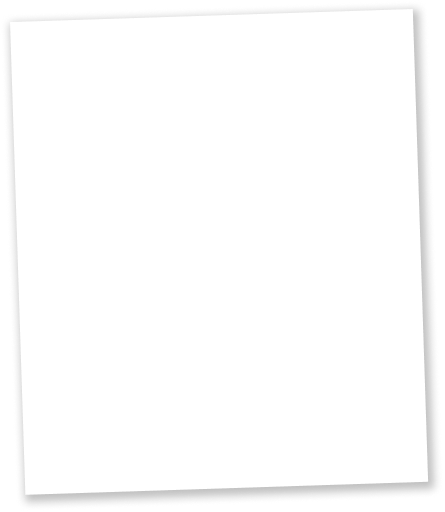
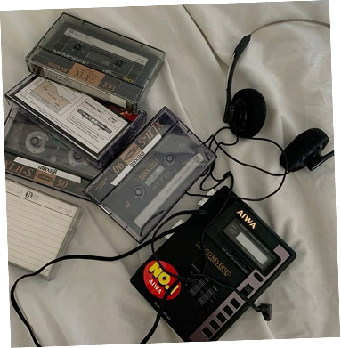
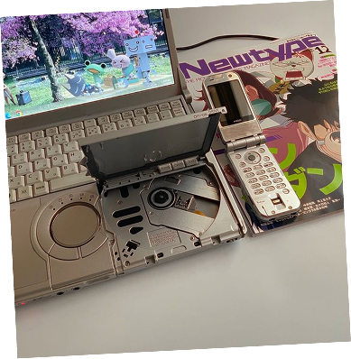
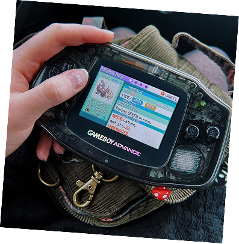
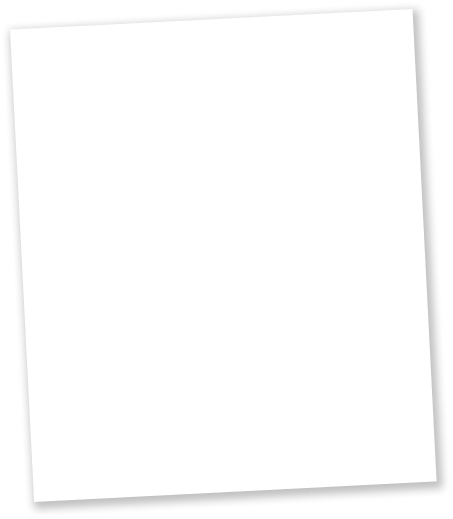
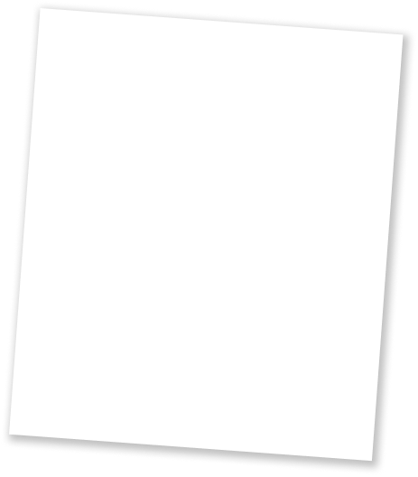

PORTFOLIO


Bonjour et bienvenue ! Je m'appelle Minh Khua, actuellement informaticienne, et bientôt ingénieure en informatique et entrepreneuse à mon compte.
Je suis guidée par une puissante motivation dans la vie : celle de la contribution sociétale. Pour moi, l'informatique et les connexions scientifiques en général doivent être utilisées dans le but d'améliorer la condition humaine et l'expérience de vie.
Portée par cette vision, je suis convaincue que l'utilisation actuelle de l'informatique est erronée et ne correspond pas à ma conception d'un usage sain des technologies numériques.
C'est pourquoi j'ai décidé de prendre la responsabilité de concrétiser moi-même cette vision. Vous trouverez ci-dessous une présentation de mon plan visant à vous en démontrer la pertinence.
Depuis mes jeunes années, j'ai toujours eu une forte affection pour les technologies, comme les consoles de jeux Nintendo ou les walkmans. Les utiliser était une expérience inoubliable et de véritables moments de connexion avec mes proches.




Ce sont ces expériences qui ont forgé ma vision de l'informatique et de l'ingénierie technologique : des outils qui contribuent à l'expérience humaine et rendent les moments d'utilisation mémorables. Je suis d'avis que la technologie doit servir l'humain, et non supprimer le plaisir de son utilisation ni les liens humains qui l'accompagnent.

De ce fait, je considère l'informatique non seulement comme une filière scientifique, mais aussi comme un domaine éthique et humanitaire. Concevoir des outils utiles à tous implique de prendre en compte les contraintes morales qui se soulèvent et de trouver un juste équilibre entre l'utilité et les effets potentiellement intrusifs ou dérangeants.
À la recherche de cet équilibre, que j'estime être au cœur de mon métier, je me suis tracé un chemin qui me mène vers la réalisation de cette vision et auquel je m'engage pleinement. C'est cette conviction qui m'amène aujourd'hui devant vous.
